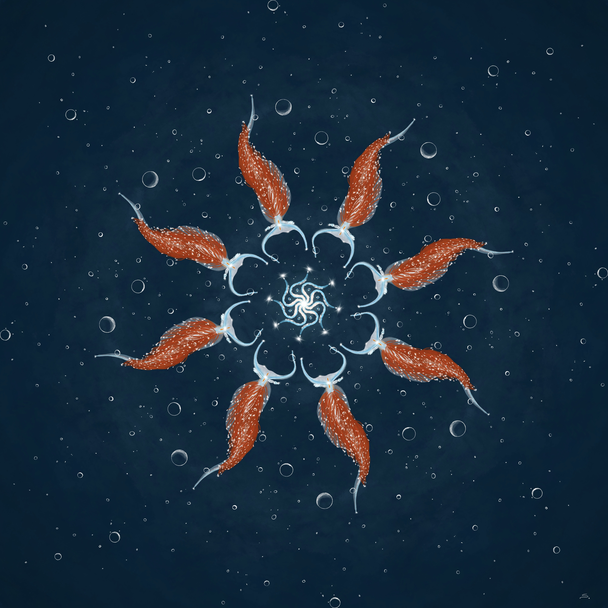
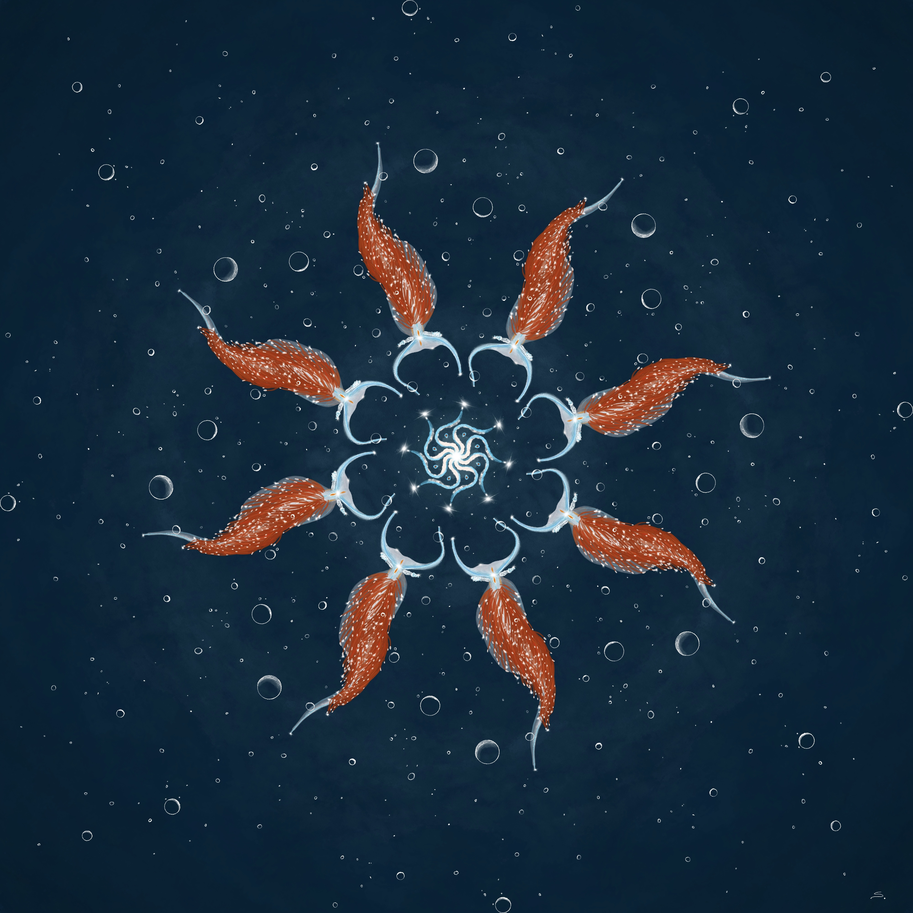
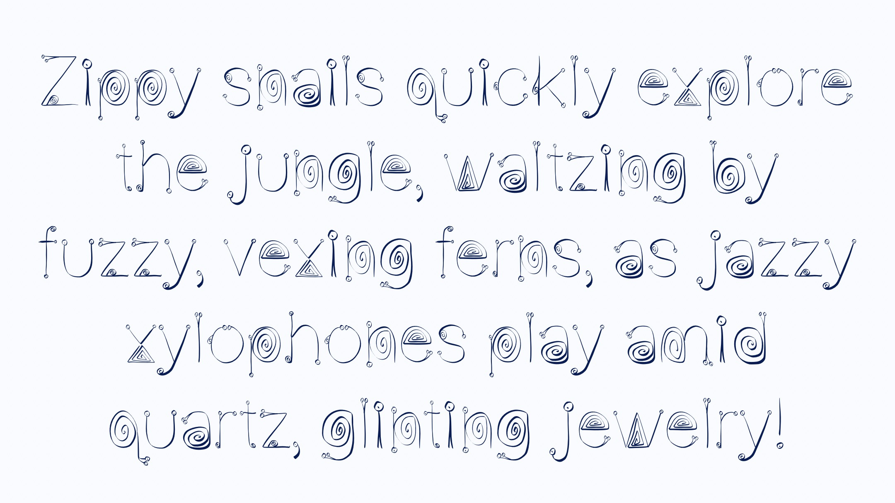
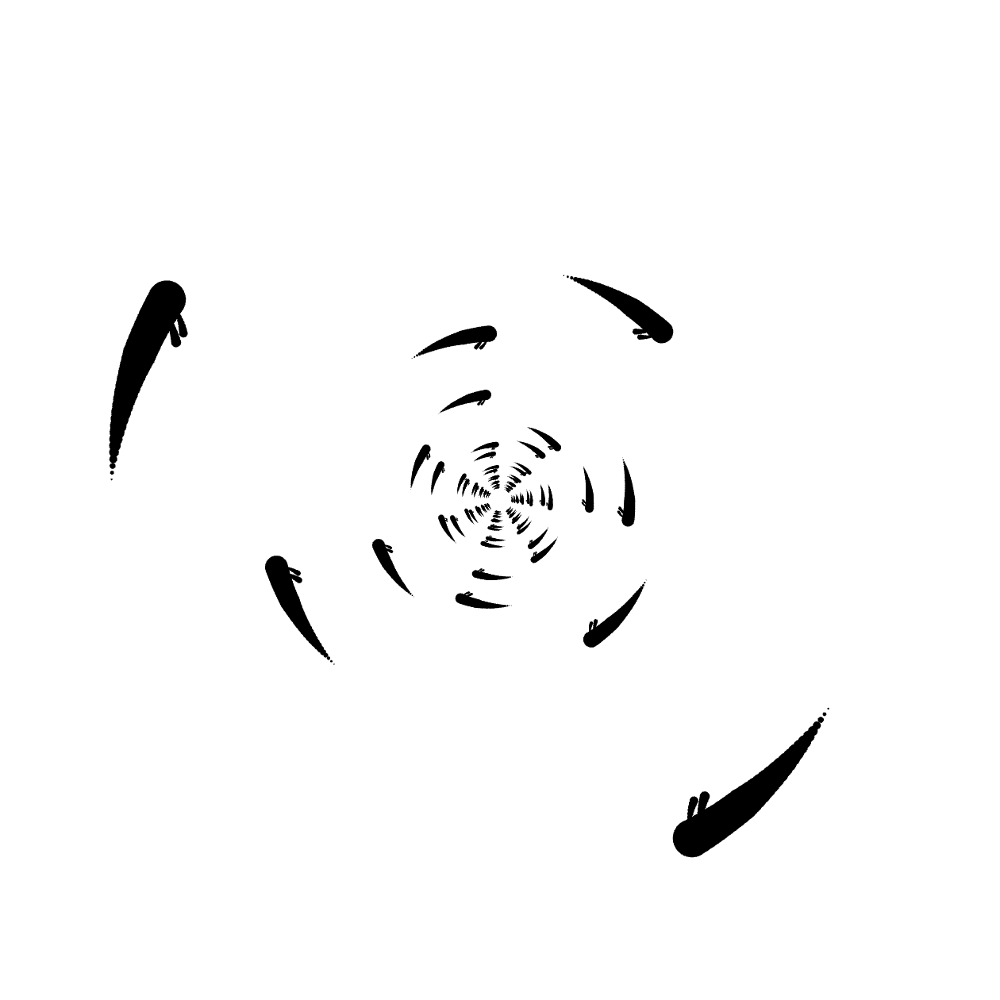
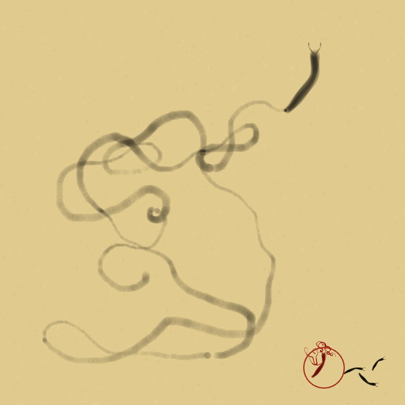

December 21: Didn't do slugs today. I played with p5 instead and made: Arcs of Arcs (full page) You can click to interact with the sketch.
I also did some of the math in Desmos. Desmos link.
December 19-20: Learned how to make a 3d CSS photo cube using Treehouse videos. I added to the top of the gathering nudibranchs gallery.
 



December 15 - 18: Creation of Seafoam the Wooly Nudibranch and their adoption page. This was my first time arching letters with CSS. Wooly nudibranch of the month.
December 14: made a gallery page for the gathering nudibranchs
December 13: Nothing with gastropods - just made haiku without words.
December 11 & 12: Made a snail font. 
December 10: Fixed p5js display issue on the site. Started thinking about how to display nudibranch gallery.
December 9: Doodled two more nudibranchs.
December 8: Doodled another nudibranch.
December 7: hypnotic slugs - I was having issues getting my canvas placed tonight so just did an embed. 
December 6: Doodled another nudibranch.
December 5: Doodled another nudibranch. Doodles are all I have capacity for this week as a loved one is transitioning from this life.
December 4: Doodled a nudibranch and contemplated the beauty of life's details.
December 3: Created a RPGastropoda form for character creation. I have been learning CSS and HTML this month and this is my first form with javascript.
December 2: Created a slug painter inspired by Nagasawa Rosetsu's slug painting from the 1700's.
December 1: I made this website and planned out some of my days. This includes a sketch of the banana slug on the page.